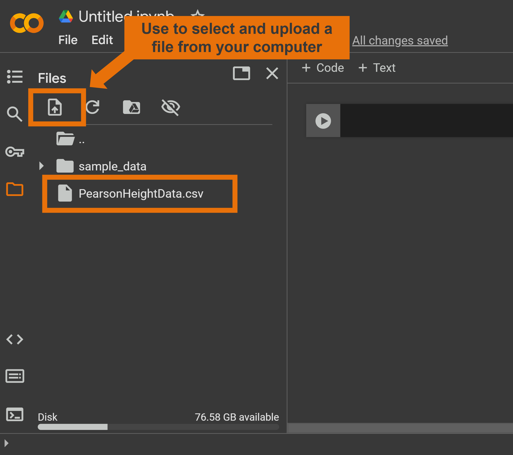

Instructions for Accessing Data Files
Option 1: Downloading Files to Your Computer
- Open the desired file on GitHub.
- Click the Download raw file button, represented by a downward-facing arrow icon ⬇️ in the top-right corner of the file display window.
- Save the file to your computer.
Once downloaded, you can upload the file to Google Colab (see image):
- Use the Files tab in the sidebar to upload the file.
- Access the file in your script using the
read.csv()function.
E.g.,read.csv("PearsonHeightData.csv")
Option 2: Using a GitHub "Raw" URL to Load Data Remotely
Instead of downloading and uploading the file, you can load it directly into your Google Colab script by using the "raw" URL from GitHub. Here's how:
- Navigate to the desired file on GitHub.
- Click the Raw button (located next to the "Download" button) to display the raw version of the file.
- Copy the URL from your browser's address bar.
For example, to load the file PearsonHeightData.csv remotely, use the following code in your script:
read_csv("https://raw.githubusercontent.com/jpisklak/courses/refs/heads/main/PSYCH_413/data_files/PearsonHeightData.csv")
This approach eliminates the need for manual uploads, streamlining the workflow.